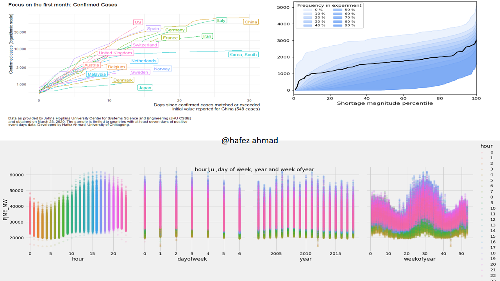

Professional Development Plan
Published on July 5, 2023 by Hafez Ahmad
Ocean Science and Coastal Research
Goal: To become a leading expert in ocean science and coastal research, with a focus on coastal remote sensing, autonomous ocean platforms, advanced modeling techniques, and climate change impacts on marine ecosystems.
1. Enhance Technical Skills:
- Attend workshops, seminars, and training programs to stay updated on the latest advancements in remote sensing technologies, autonomous ocean platforms, and advanced modeling techniques.
- Acquire hands-on experience with state-of-the-art equipment and software used in coastal remote sensing and autonomous data collection.
- Collaborate with experts in the field to gain insights and expertise in utilizing advanced modeling techniques for climate variability and change predictions.
2. Research Excellence:
- Conduct in-depth literature reviews to deepen knowledge on coastal remote sensing, autonomous ocean platforms, and climate change impacts on marine ecosystems.
- Design and execute research projects focusing on applying remote sensing and autonomous platforms to study coastal dynamics, ocean-atmosphere interactions, and ecosystem responses to climate change.
- Publish research findings in reputable peer-reviewed journals to contribute to the scientific community's understanding of ocean science and coastal research.
3. Collaborative Networking:
- Attend conferences, symposiums, and research events to connect with experts in the field of ocean science and coastal research.
- Collaborate with interdisciplinary research teams to foster knowledge exchange and develop collaborative projects addressing complex research questions.
- Actively participate in professional societies and organizations related to ocean science and coastal research to expand professional networks and stay informed about emerging trends and opportunities.
4. Policy and Outreach:
- Engage in science communication activities to bridge the gap between scientific research and policy-making processes.
- Contribute to public awareness by presenting research findings at public lectures, workshops, and community events.
- Seek opportunities to collaborate with government agencies, NGOs, and environmental organizations to provide scientific expertise and inform decision-making processes related to coastal management and climate change mitigation.
5. Professional Growth and Leadership:
- Pursue continuous professional development by attending leadership and management training programs to acquire essential skills for leading research teams and projects.
- Seek mentorship opportunities with renowned experts to gain valuable guidance and insights into successful career development in ocean science and coastal research.
- Actively contribute to the professional community through peer mentoring, reviewing scientific papers, and serving on relevant committees or advisory boards.
By following this professional development plan, I aim to become a recognized expert in ocean science and coastal research, significantly contributing to understanding coastal dynamics and climate change impacts and utilizing remote sensing and autonomous technologies effectively. I am committed to lifelong learning, collaborative research, and applying scientific knowledge for sustainable coastal management and conservation of marine ecosystems.
My Journey to Machine Learning
Published on June 3, 2023 by Hafez Ahmad
Machine learning has become an incredibly fascinating field in recent years, and my journey into it has been an exciting and rewarding experience. In this blog post, I would like to share my personal journey to machine learning and the lessons I've learned along the way.

The Spark of Curiosity
My journey began with a spark of curiosity. I was always fascinated by the ability of machines to learn and make intelligent decisions. This curiosity led me to delve deeper into the world of artificial intelligence and machine learning.
Education and Learning Resources
Education played a crucial role in my journey. I started by taking online courses and tutorials that introduced me to the fundamentals of machine learning. Platforms like Coursera, Udemy, and edX provided excellent resources that helped me understand concepts like regression, classification, and neural networks.
Hands-On Projects
Theoretical knowledge alone was not enough. To solidify my understanding, I actively engaged in hands-on projects. I started with simple exercises, implementing basic algorithms and models. As my confidence grew, I took on more complex projects, such as image classification and natural language processing.
Community and Collaboration
Being part of the machine learning community was a game-changer. I joined online forums, participated in Kaggle competitions, and attended local meetups. Engaging with like-minded individuals and collaborating on projects not only expanded my knowledge but also exposed me to different perspectives and innovative approaches.
Real-World Applications
Applying machine learning to real-world problems was a significant milestone in my journey. I sought opportunities to work on projects in domains like healthcare, finance, and computer vision. These experiences allowed me to witness the impact of machine learning firsthand and reinforced my passion for the field.
Continual Learning and Growth
Machine learning is a rapidly evolving field, and staying updated with the latest advancements is essential. I continue to learn and explore new techniques, frameworks, and research papers. Reading blogs, attending conferences, and taking part in online courses keep me engaged and motivated.
Conclusion
My journey to machine learning has been an incredible adventure of self-discovery and continuous learning. It has opened up a world of possibilities and allowed me to contribute to solving complex problems. If you're considering diving into machine learning, remember that the journey is unique for everyone. Embrace the challenges, stay curious, and keep pushing your boundaries.
How I Started Loving Data-Driven Decision Making
Published on June 3, 2023 by Hafez Ahmad

In today's data-rich world, making data-driven decisions is no longer a luxury but a necessity for businesses and individuals alike. By harnessing the power of data, we can unlock valuable insights, mitigate risks, and identify opportunities that may otherwise go unnoticed. However, being truly data-driven goes beyond just collecting and analyzing data—it requires a deliberate and thoughtful approach. Here are some key principles to consider when aiming to make data-driven decisions.
The Awakening
My journey into the world of data-driven decision making started with an awakening. I realized that we are surrounded by an incredible amount of data that holds valuable insights. It dawned on me that I could leverage this data to make informed decisions and improve outcomes.
Curiosity and Learning
Driven by curiosity, I delved into the field of data science and analytics. I immersed myself in online courses, books, and tutorials to understand the foundations of data analysis. Learning statistical concepts, data visualization, and data manipulation techniques provided me with a solid grounding in the field.
Exploring Real-World Data
Applying what I learned, I sought out opportunities to work with real-world data. Whether it was analyzing customer behavior, market trends, or operational metrics, I dove into datasets to uncover patterns and insights. This hands-on experience solidified my understanding and showcased the potential of data-driven decision making.
Data Visualization and Storytelling
I discovered the power of data visualization in conveying complex information effectively. I honed my skills in creating visually compelling charts, graphs, and dashboards that not only presented the data but also told a compelling story. This skill became instrumental in influencing decision makers and driving change.
Impact on Decision Making
As I started incorporating data-driven approaches into my decision-making process, I witnessed the tangible impact it had on outcomes. By basing decisions on evidence and insights derived from data, I could make more informed choices, mitigate risks, and uncover opportunities that were previously hidden.
Sharing and Collaboration
I realized the importance of sharing my knowledge and collaborating with others in the field. I actively participated in data science communities, attended conferences, and engaged in discussions with fellow data enthusiasts. This collaborative environment fostered growth, sparked new ideas, and pushed me to further refine my skills.
Continuous Improvement
Data-driven decision making is an ever-evolving field. I recognized the need for continuous learning and staying abreast of the latest tools, techniques, and trends. By staying curious and dedicating time to self-improvement, I ensure that my data-driven decision-making skills remain sharp and relevant.
Conclusion
My journey into data-driven decision making has been transformative. It has empowered me to make more informed choices, unlock valuable insights, and drive positive change. If you're yet to embark on this journey, I encourage you to embrace the power of data and witness the tremendous impact it can have on your decision-making process.
How I Am Improving My Programming Skills
Published on June 3, 2023 by Hafez Ahmad
Programming is a dynamic and ever-evolving field, and as a developer, I am constantly striving to improve my skills. In this blog post, I would like to share some strategies and techniques that I have found helpful in my journey to enhance my programming abilities.
Setting Clear Goals
Improving programming skills starts with setting clear and achievable goals. Whether it's mastering a new programming language, learning a specific framework, or tackling a complex project, defining what you want to achieve helps provide direction and focus.
Continuous Learning
The key to improving programming skills is a commitment to continuous learning. I dedicate time to regularly learn new concepts, explore different programming paradigms, and stay updated with the latest industry trends. Online courses, tutorials, and coding resources have been invaluable in expanding my knowledge.
Practical Application
Applying what you learn in real-world scenarios is crucial to reinforce your programming skills. I actively seek out opportunities to work on projects that challenge me and require me to apply the concepts I've learned. These hands-on experiences provide practical insights and foster problem-solving abilities.
Working on Open Source Projects
Contributing to open source projects is a fantastic way to improve programming skills. By collaborating with experienced developers and contributing to real-world projects, I gain exposure to different coding styles, best practices, and project management techniques. It also allows me to receive feedback and learn from the programming community.
Code Review and Feedback
Seeking feedback on your code is an essential part of growth. I actively engage in code reviews with peers and more experienced developers. Constructive feedback helps identify areas for improvement, highlights coding patterns, and promotes writing cleaner and more efficient code.
Building a Supportive Network
Building a network of fellow programmers and mentors is invaluable. Engaging in programming communities, attending meetups, and participating in online forums allows me to connect with like-minded individuals. Sharing knowledge, discussing challenges, and seeking guidance from experienced developers greatly accelerates my learning process.
Problem-Solving Practice
Improving programming skills involves honing problem-solving abilities. I regularly practice coding exercises, participate in coding competitions, and solve algorithmic challenges. These activities enhance my analytical thinking, algorithmic understanding, and ability to tackle complex problems.
Maintaining a Growth Mindset
Embracing a growth mindset is crucial for continuous improvement. Recognizing that programming skills can be developed through effort and perseverance, I approach challenges with a positive attitude and view setbacks as opportunities to learn. This mindset fosters resilience and motivates me to push boundaries.
Conclusion
Improving programming skills is an ongoing journey that requires dedication, persistence, and a thirst for knowledge. By setting clear goals, staying curious, applying what you learn, seeking feedback, and building a supportive network, you can significantly enhance your programming abilities. Embrace the process, enjoy the challenges, and never stop learning.
Best Practices in Remote Sensing for Earth Science Applications
Published on June 3, 2023 by Hafez Ahmad
Remote sensing technology has revolutionized Earth science applications, providing researchers with valuable data for environmental monitoring, land use mapping, climate studies, and natural resource management. To ensure accurate and reliable results, it is essential to follow best practices in remote sensing. In this blog post, we will explore the top practices that researchers should consider when using remote sensing for Earth science-related applications.
- Selection of Appropriate Sensors
- Ground Truth Data Collection
- Pre-processing and Image Enhancement
- Spectral Signature Analysis
- Image Classification and Analysis
- Integration of Multiple Data Sources
- Validation and Accuracy Assessment
- Long-Term Data Archives and Accessibility
- Continuous Learning and Skill Development
- Ethical Considerations